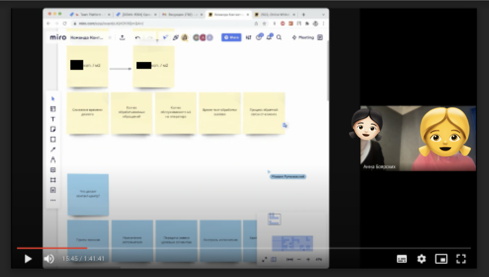

Стратегия снижения себестоимости обработки обращения абонента в
контакт-центр
Контакт-центр — это диспетчерская служба, работающая в программном
обеспечении
doma.ai
- Задача:
-
снизить себестоимость обслуживания абонентов контакт-центра, за счет
улучшения интерфейса диспетчерской
- Решение:
-
провести анализ работы диспетчера в текущем интерфейсе, чтобы найти
точки роста и планомерно улучшать опыт пользователя
- Сделал:
- CJM, гипотезы, custdev, UX/UI
- Роль:
- head of product design
Defining the strategy of design
Вначале мы все собрались и придумали план действий. Решено было
составить CJM текущей работы диспетчеров. Потом найти точки роста.

Economical impact
Определяем, какую фичу будем делать первой, с помощью параметров:
экономический эффект и сложность реализации